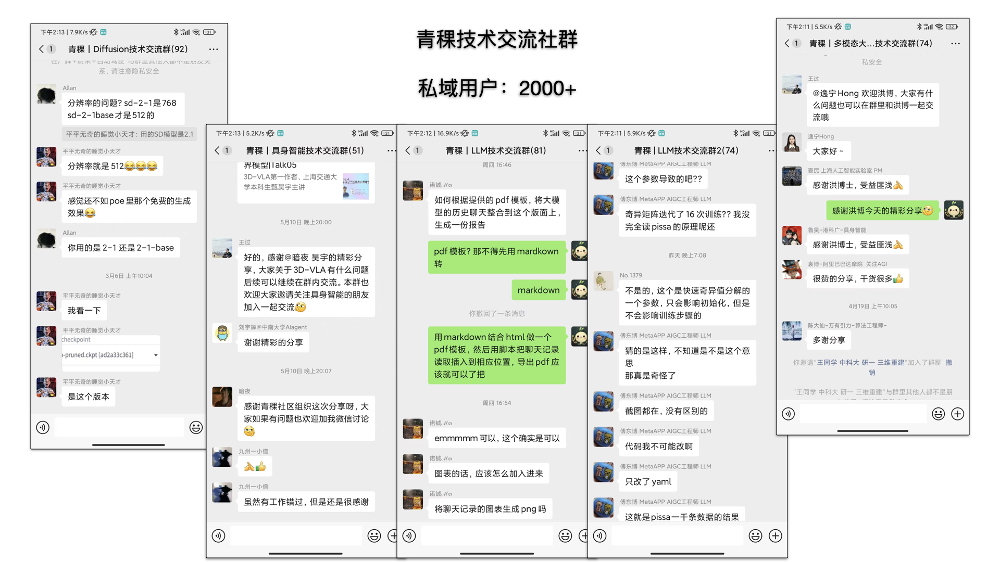
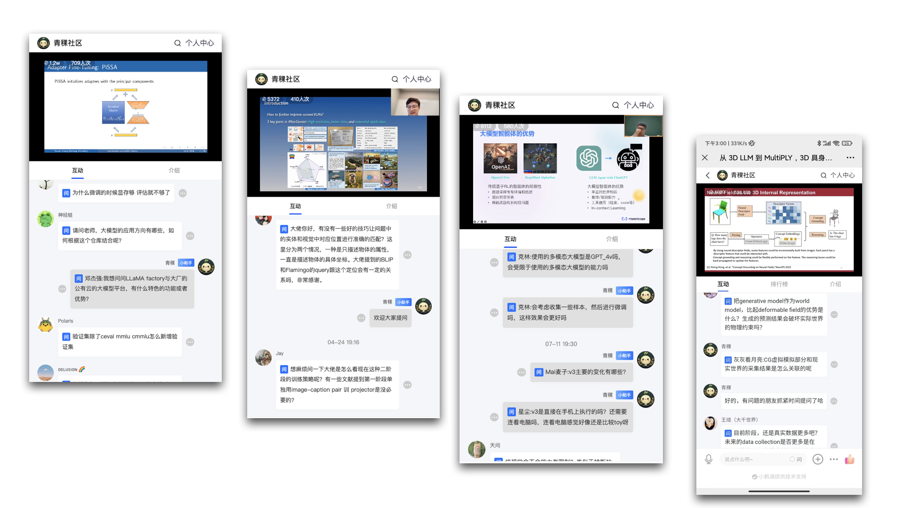

🙋♂️ 个人简介
本科计算机科学与技术专业；2019年7月入职北京智一科技，主要负责AI领域的课程产品研发，关注LLM&AIGC、计算机视觉、机器人算法、自动驾驶算法等。4年AI课程产品的设计、运营经验，具有ToC/B沟通能力。个人喜欢开源技术，有基本的开源算法复现能力，熟悉Linux操作及AI开发工具，喜欢跑AI算法模型（如YOLO、ChatGLM、LLaMa、SD等）。
🧱 工作经历
2024.11 - 现在 蚂蚁技术研究院 资深技术运营
- 研究院渠道体系构建及运营、学术成果PR
2019.07 - 2024.03 北京智一科技 资深课程经理/智东西公开课教研组Leader
主要负责AI领域课程产品研发
- 追踪AIGC/大模型/机器人/自动驾驶前沿算法，带领2-5人团队，从0搭建ToC课程产品：讲座、设计研发ToB课程产品：技术公开课。
- 从 0 - 1 调研、设计、定位、策划课程方案，协调运营和设计同事完成课程上线、推广、直播，累计300+期课程，受众达70+w。
- 筛选、邀请、联系、协调、维护500+位优秀青年学者达成课程直播合作（部分合作讲者名单），覆盖国内外100+所高校，以及大模型创新团队潞晨科技、智谱AI、面壁智能、联汇科技、一流科技等。
- ToB业务支持：对接百度Apollo、NVIDIA、英特尔等20+家大型公司，跨部门对接运营、销售、商务、设计，提供专业内容设计与输出，保证执行进度与直播效果。
🔥项目经历
2024.03 - 至今：青稞社区（面向人工智能领域的开源技术交流社区、知识服务社区）
- 社区主理/运营
▶️社区成果案例展示
 2022.01 - 2024.03：ToC产品·新青年讲座 负责人
- 关注前沿技术发展趋势，策划了AI新青年讲座、自动驾驶新青年讲座等12档讲座栏目。
- 其中AI新青年讲座125期，受众15000+、点击量200000+；自动驾驶新青年讲座14期，受众7000+、点击量55000+。
- 连接博士生/助理教授等青年讲者500+名，覆盖海内外高校如MIT、CMU、TUM、NUS、斯坦福、清华、北大等100+余所。
- 对接运营，设立目标并协助目标完成。
- 进行用户需求挖掘，以及讲者的二次挖掘。
- 持续迭代讲座产品的设计、运营、流程等。
2022.11 - 2023.06：大型语言模型技术公开课 负责人
- 调研 LLM/VLM/MLLM 产品 ，以及大模型产业和相关技术，制作大模型产业图谱和技术图谱，在ChatGPT爆火前就对其进行立项。
- 策划大型语言模型技术公开课方案，联系并沟通邀请企业大模型负责人。
- 设计课程主题提纲。跨部门沟通制作推广素材，确认推广运营方案。
- 保证直播进行，对主讲人进行直播培训，并进行直播组织。
- 本课程共策划8期内容，受众1700+，点击量15000+。
2023.02 - 2023.03：GTIC 2023中国AIGC创新峰会 委员会成员
- 参与议程与议题设计。
- 寻找并沟通联系大模型/AIGC领域创新企业，邀请参与峰会主题分享。包括北京智谱华章科技、潞晨科技、aiXcoder、计算美学（Nolibox）等。
- 嘉宾对接，设计分享主题，并把关嘉宾PPT。
- 现场活动演讲彩排和部分嘉宾接待。
🛠 教育背景
2015.09-2019.07：石家庄铁道大学 计算机科学与技术专业 本科
🤺 个人技能
- 了解AI、大模型、机器人等前沿算法和技术应用。
- 熟悉开源社区，熟悉Linux系统的操作使用，可以跑AI模型。
- 优秀的团队管理、跨部门沟通及协同能力。
- 结果导向，强执行力和自我驱动能力、理解能力和学习能力。
- XMind、PPT、Keynote等。
$ _{update:2024.06} $